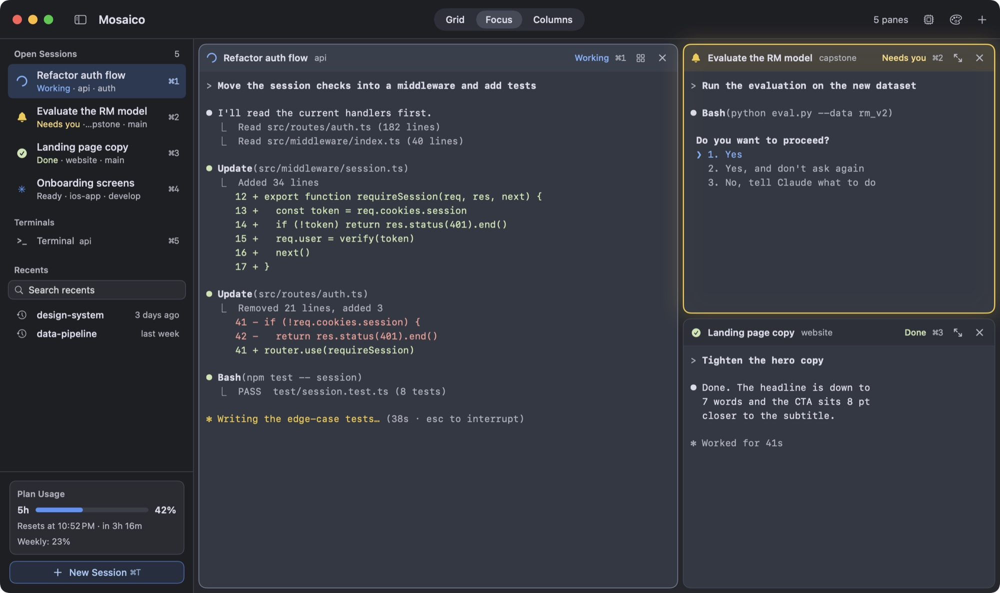

Every agent session in one window.
Mosaico runs your Claude Code and Codex sessions side by side and shows the state of each one, so you see at a glance which one finished and which one is waiting for you.
Paste this in Terminal:
$ curl -fsSL https://alexchequer.github.io/mosaico-releases/install.sh | bash
Or download Mosaico-macOS.zip and see the first time you open it.
Paste this in PowerShell:
> irm https://alexchequer.github.io/mosaico-releases/install.ps1 | iex
Or download the installer and see the first time you open it.

Know which session needs you
Each pane and each row in the sidebar shows what its agent is doing, from the agent's own hooks.
- Working
- The agent is thinking or running a tool.
- Needs you
- It asked for permission or a choice. The pane gets a yellow border, the Dock or the taskbar shows it, and a notification comes if you're in another app.
- Done
- It finished. A green glow stays on the pane until you click or type in it.
- Ready
- Waiting for your next prompt.
What it does
A terminal made for running several agents at once, and nothing in the way of the agents themselves.
Grid, Focus and Columns
Up to nine panes that rearrange themselves as you open and close sessions. ⌘1 to ⌘9 (Ctrl+1 to Ctrl+9 on Windows) jumps to one.
Notifications that matter
Only when a session needs you or finishes, and only when you're looking at another app.
Your plan's limits in view
How much of the 5-hour window and of the week you've used, for Claude Code and for Codex.
Back where you left off
Close Mosaico and open it again: each pane returns in its folder and its conversation.
Claude Code and Codex
Start either one from New Session. A claude or codex you type in a plain terminal is recognized too.
23 themes
Dark and light, from Terminal and Paper to Nord, Dracula, Solarized and Catppuccin.
The first time you open it
Mosaico isn't signed by Apple or Microsoft yet, so a file downloaded in the browser gets a warning the first time. The command above downloads without the browser and skips that warning. You can read what it runs: install.sh and install.ps1.
Downloaded the macOS zip
- Unzip it and drag Mosaico to Applications.
- Open it. macOS says it can't check the app; click Done.
- Go to System Settings → Privacy & Security, scroll down and click Open Anyway.
- On macOS 14, Control-click Mosaico in Applications and choose Open instead.
Downloaded the Windows installer
- Open Mosaico-Windows-Setup.exe.
- On “Windows protected your PC”, click More info, then Run anyway.
- Mosaico installs for your user only and goes in the Start menu.
Your settings stay yours
Sessions you start in Mosaico report their state on their own. To also follow a claude you type yourself, or Codex, Mosaico needs an entry in that agent's settings: it asks first, keeps a backup and has a Remove button in Settings.
Nothing leaves your computer
Mosaico has no account and never goes online. Its logs stay on your computer and hold event names and sizes, never your prompts, code or answers.